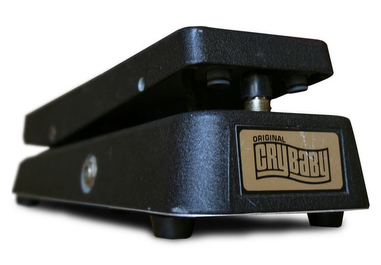

Scheda 075 · 1966 · California e Pescara
Wah-wah Cry Baby
I wah di Jimi Hendrix li costruiva una fabbrica di Pescara
Il pedale a bilanciere di Vox e Thomas Organ, poi di Dunlop. Da 60 anni sotto i piedi dei chitarristi.
Il suono vero · 0:22
Un Cry Baby GCB-95 vero su una chitarra elettrica in suono pulito, con passate lente e rapide del pedale; l'amplificatore è simulato al computer.
0:00 / 0:22
Registrazione di Skimel · CC BY-SA 4.0 · Wikimedia Commons · estratto di 22 s, volume normalizzato
- NATO
- Novembre 1966
- IN NEGOZIO
- Febbraio 1967
- BREVETTO
- USA 3.530.224
- DUNLOP
- Dal 1982
La macchinaChe cos'è
Quello della foto è un Cry Baby GCB-95, il modello base di Dunlop, fatto prima del 1990. Dentro c'è pochissimo. Il pedale è un bilanciere, e muovendolo fa girare un potenziometro. Sulla scheda ci sono 2 transistor e un induttore, il disco nero al centro, che con un condensatore decide quale fetta di frequenze passa più forte. Il nome Dunlop l'ha comprato nel 1982, l'anno dopo la chiusura della Thomas Organ. A me il wah è sempre sembrato il pedale più onesto della pedaliera. Quello che fa il piede si sente subito, nel bene e nel male.
Chi l'ha costruitaBrad Plunkett, Thomas Organ
Nel novembre 1966 la Thomas Organ, che in California costruisce i Vox per il mercato americano, chiede a un giovane ingegnere, Brad Plunkett, di togliere un commutatore costoso dall'amplificatore Super Beatle. Lui lo rifà a transistor con un potenziometro, e provandolo si accorge di aver fatto per sbaglio un'altra cosa. Il prototipo finisce nella scatola di un pedale del volume dell'organo Vox Continental. Il presidente, Joe Benaron (le fonti lo scrivono anche Banaron), lo vuole vendere ai fiati, e ci mette il nome di Clyde McCoy, il trombettista di «Sugar Blues». Pare per 500 dollari.
Come funzionaCosa c'è dentro
È un filtro passa-banda. Lascia passare forte una fetta stretta di frequenze e abbassa il resto, e il piede sposta quella fetta su e giù, dai bassi agli acuti. Viene dalla sordina. Negli anni '20 i trombettisti la muovevano davanti alla campana e lo strumento sembrava piangere, e McCoy su quel trucco ci aveva fatto una carriera. Il pedale fa lo stesso con la chitarra, e il risultato somiglia a una voce che dice «uà». Provate anche a lasciarlo fermo a metà corsa. Diventa un filtro fisso, quello che i chitarristi chiamano «cocked wah».
Chi l'ha usataNei dischi
- Eric Clapton (Cream)«Tales of Brave Ulysses», registrata nel maggio 1967 con un pedale Vox, fra i primi dischi col wah
- Jimi Hendrixil primo wah su «Burning of the Midnight Lamp» (1967), dopo averlo visto usare da Frank Zappa a New York
- Charles «Skip» Pittsl'attacco col wah di «Theme from Shaft» di Isaac Hayes (1971)
Da ascoltare
The Jimi Hendrix Experience, «Voodoo Child (Slight Return)» (1968)
I primi secondi. Hendrix smorza le corde e il ritmo lo fa col pedale, prima ancora di suonare una nota.
L'aneddotoUna storia
Joe Benaron vuole costruire i Vox dove costa meno. Ennio Uncini viene dalla EKO di Recanati, la fabbrica di chitarre, e insieme aprono a Pescara la JEN, che sono le loro iniziali, Joe ed ENnio. Lì passa la produzione dei wah Vox e dei Cry Baby, nel 1968 o nel 1969 (le fonti non concordano), e ci resta per tutti gli anni '70. Il nome Cry Baby la Thomas Organ non l'ha mai registrato, e la JEN lo mette anche sui pedali col suo marchio. Michael Heatley, che ha fatto l'inventario dell'attrezzatura di Hendrix, scrive che i suoi wah erano fatti lì.
Avvertenze
La scatola viene dal pedale del volume di un organo Vox Continental. Il volume, però, non lo tocca: il piede sposta il filtro.
Il reel
La versione corta
Le cose da sapere in fila, una schermata alla volta, col suono della macchina quando ne esiste una registrazione libera. Aprilo su Instagram ↗
Il carosello
Le 6 tavole


Da dove viene
Fonti
- «Wah-wah pedal» — Wikipedia (EN) verificata il 2026-10-28
- «Dunlop Cry Baby» — Wikipedia (EN) verificata il 2026-10-28
- «Clyde McCoy Wah» — Vox Showroom verificata il 2026-10-28
- «Vox Wah-Wah by JEN» — Vox Showroom verificata il 2026-10-28
- «50 Years of Cry Baby» — Dunlop, 2017 verificata il 2026-10-28
- «Del Casher» — Vintage Guitar, 2017 verificata il 2026-10-28
- «JEN Tone Bender» — hendrixguitars.com verificata il 2026-10-28
- «1980 Jen Cry Baby Super» — Crave Guitars verificata il 2026-10-28
- «Eko (azienda)» — Wikipedia (IT) verificata il 2026-10-28
- «Clyde McCoy» — Wikipedia (EN) verificata il 2026-10-28
- «Jimi Hendrix» — Wikipedia (EN) verificata il 2026-10-28
- «Voodoo Child» — Far Out Magazine verificata il 2026-10-28
- «Tales of Brave Ulysses» — Wikipedia (EN) verificata il 2026-10-28
- «Charles Pitts» — Wikipedia (EN) verificata il 2026-10-28
- «Charles Pitts», necrologio — AP, 2012 verificata il 2026-10-28
Foto: Massimo Barbieri · CC BY-SA 3.0 · Wikimedia Commons
Foto nelle tavole: Massimo Barbieri · CC BY-SA 3.0 · Wikimedia Commons
Foto nelle tavole: Marco Raaphorst · CC BY 2.0 · Wikimedia Commons
Suono: Registrazione di Skimel · CC BY-SA 4.0 · Wikimedia Commons · estratto di 22 s, volume normalizzato